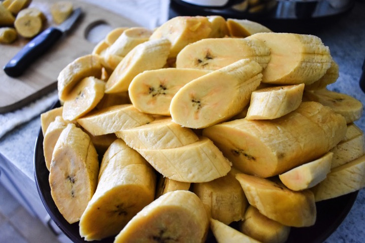

Fried Platain

Description
Dodo, fried plantain is a delicous dish made from ripe plantain.
Ingredients
- 4 very ripe plantains
- vegetable oil
Steps
-
Fill a pan or skillet about 2 inches deep with oil and heat over medium-high flame for about 5 minutes.
-
skin and cut plantain into slices about 1-inch thick.
-
Add plantain slices to hot oil to cook.
-
Allow the slices to cook for about 5 minutes then flip.
The bottoms of each slice should be golden brown, if not, flip back and cook a bit longer.
Repeat on the opposite side then remove dodo from oil and place onto paper towel-lined plate.
Back to Top